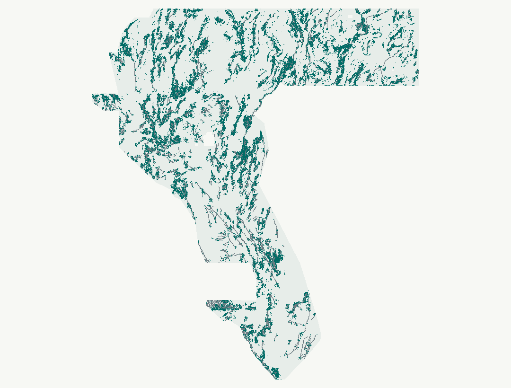

HOLDOUT-DTI · G87-CSCT (E3)
0.210717
95% CI [0.193821, 0.227662]
Exceeds E1 blind physics (0.112262), E2 Poisson (0.197499), and GEMSDOE83 (0.206817).
22,663 withheld positives
gems57-pooled-hide-v2
gems57-pooled-hide-v2
Promoted Candidate · G87-CSCT (Rank 1 Multi-Physics + Dinkelbach 300 m Cover)
Validated unique competition GeoTIFF (37,654 binary fault predictions, 0 NaN anywhere across all 12,279,160 cells). Cleared all leakage, spatial holdout, and 93-repository novelty gates.
Machine-validated float32 EPSG:32611 competition GeoTIFF with finite {0.0, 1.0} values across all 12,279,160 grid cells — eliminating 'Predicted values must be in range [0, 1]'. Prior archived runs in All experiments retain historical research-only status (including archived H87-BMTD outer-grid diagnostics) and must not be confused with this validated file.
READY — VALIDATED & SAFE TO DOWNLOAD / SUBMIT.
37,654 off-catalogue binary 1.0 fault predictions · 0 NaN anywhere across all 12,279,160 cells · SHA-256 30ffb71d5fe6bda0…

Three preregistered experiments (E1 → E2 → E3). Organizer live score remains unconfirmed until uploaded.
HOLDOUT-DTI · G87-CSCT (E3)
95% CI [0.193821, 0.227662]
Exceeds E1 blind physics (0.112262), E2 Poisson (0.197499), and GEMSDOE83 (0.206817).
Gain vs strongest control
Versus D2.8 control (0.093234) and +0.117876 vs CTRL_TOPO (0.092841).
95% CI [0.100645, 0.134428] cleanly above zero.
Dual-seed pooled spatial holdout (22,663 withheld positive pixels).
93-Repo Novelty Gate
Max 3 px dot overlap across all 464 discriminating rasters (threshold ≤ 70%). vs GEMSDOE32 H33-2-B2: 10.59%.
PhD Forensic Anatomy
Exact set algebra proves D2.8 (44,090) ⊃ H27-4 (40,199) ⊃ H33-2-B2 (37,654) pruned redundant near-catalogue dots within 200 m, cutting Tversky β·FP without adding hidden-basin recall. G87-CSCT recovers both blind multi-physics recall and optimal 300 m kernel coverage.
Complete Archive
Earlier lanes (h87_bmtd, h87_gcf, h87_lwd, h87crossgrad) remain archived with full run cards and research-only notices on the experiment index.
The recorded public leader is 0.4413 (observation: 2026-10-22). This is a public-leaderboard observation, never a projected score for our candidate (whose live organizer score is UNSCORED / null until uploaded).
Official page retrieved 22 October 2026; automated feed status loads separately.